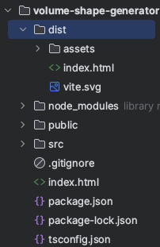

生成条件を指定したボリューム生成
必要な建物情報をJSON形式にし、APIのgetVolumeShapesData関数に渡すことで生成条件を指定したボリューム生成を行うことができます。
3Dモデルデータ生成に必要な情報
3Dオブジェクトを生成するには既存建築物の以下の情報が必要になります。
- 敷地面積、階高、容積率
- 建物形状の高さの上限の算出に使用します。
- 建物形状のローカル座標
- 建物のフットプリント座標から建物形状のモデルデータを生成します。このモデルデータから、各種制限によるブーリアン処理を行います。
- 隣地斜線制限面ローカル座標、道路斜線制限面ローカル座標
- 制限面座標から建物形状のカッティング処理に必要なモデルを生成しブーリアン処理を行います。
- 地域の高さ制限
- 敷地面積、階高、容積率から算出する高さ上限より優先される高さ制限値です。
- 元のビルの高さ
- 建築可能な建物の最大ボリュームと既存建築物の差分を表すために使用します。
建築物情報のJSONデータをAPIの関数に渡すと、本アプリケーションで定義されているBuildingParamという型エイリアスに格納されます。
type BuildingParam = {
siteArea: number //敷地面積
building: BABYLON.Vector3[] //建物形状ローカル座標
syasenPlanes: BABYLON.Vector3[][] //道路外側斜線制限面ローカル
rinchPlanes: BABYLON.Vector3[][] //隣地斜線制限面ローカル
citygml_me: number //元のビルの高さに相当
far: number //容積率
kaidaka: number //階高
maxLimitH: number | null //生成する建物の高さをこの値で制限.容積率より優先
}
JSONファイル作成は機能確認用サンプルでも利用しているbuildingParamSample.tsファイル内のJSONテキストデータを参考にして下さい。
ボリューム生成と確認
アプリケーションが用意している機能確認用サンプルの表示方法で、生成条件を指定したボリュームを確認する場合は下記手順を行って下さい。
- 確認用サンプルでは
src/sampleディレクトリ内のVolumeShapeGenerateControllerクラスのstartOperation関数内でBuildingParamSampleクラスのgetParamsJsonText関数を実行しJSONデータ取得処理を行っています。 - 生成条件を指定したボリューム生成を確認用サンプルの表示方法で確認したい場合は、 指定した生成条件に従ってJSONデータを作成し、 確認用サンプルのJSON取得処理部分を、作成したJSONデータを取得するように変更してボリューム生成を行います。
- 「サンプルデータを使ったボリューム生成」で紹介しました
$ npm run devコマンドで確認することができます。
指定した生成条件に従い生成したボリュームから容積値とGLBファイルを取得する機能だけが必要な場合は、
src/serviceディレクトリ内のボリューム生成、データ取得機能とAPI機能のみ使用します。
- src下の
index.html、main.ts、style.cssはプロジェクトに合うように適宜変更して下さい。 - 「APIの仕様」ページを確認し、
src/service/api/VolumeShapeGenerator.tsファイルの関数に必要なデータを引数として渡し容積値とGLBファイルを取得して下さい。
ソースコードのビルド
$ npm run devコマンドによる開発用ローカルサーバーでの確認だけでなく、
アプリケーションを本番環境で実行する場合は$ npm run buildコマンドでソースコードをビルドします。
コマンドラインを操作します。volume-shape-generatorディレクトリに移動し以下のコマンドを実行します。
$ npm run build
volume-shape-generatorディレクトリ下にdistフォルダが作られ本番用に最適化されたコードが書き出されます。

ビルドが成功したら下記コマンドを実行しプレビュー用のサーバー上で確認ができます。
$ npm run preview
npm run previewコマンドは、ソースコードをビルドしてプレビュー用の環境で実行するために使用されます。
通常、npm run devコマンドよりも本番環境に近い環境でアプリケーションを確認することができます。